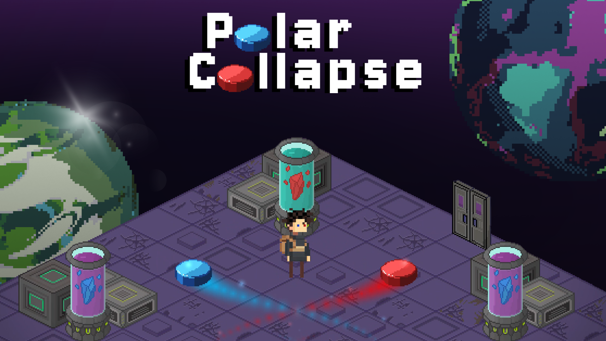
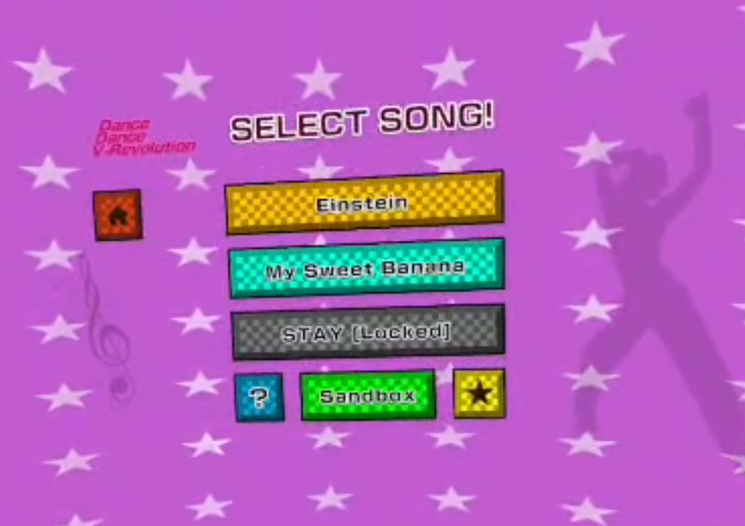
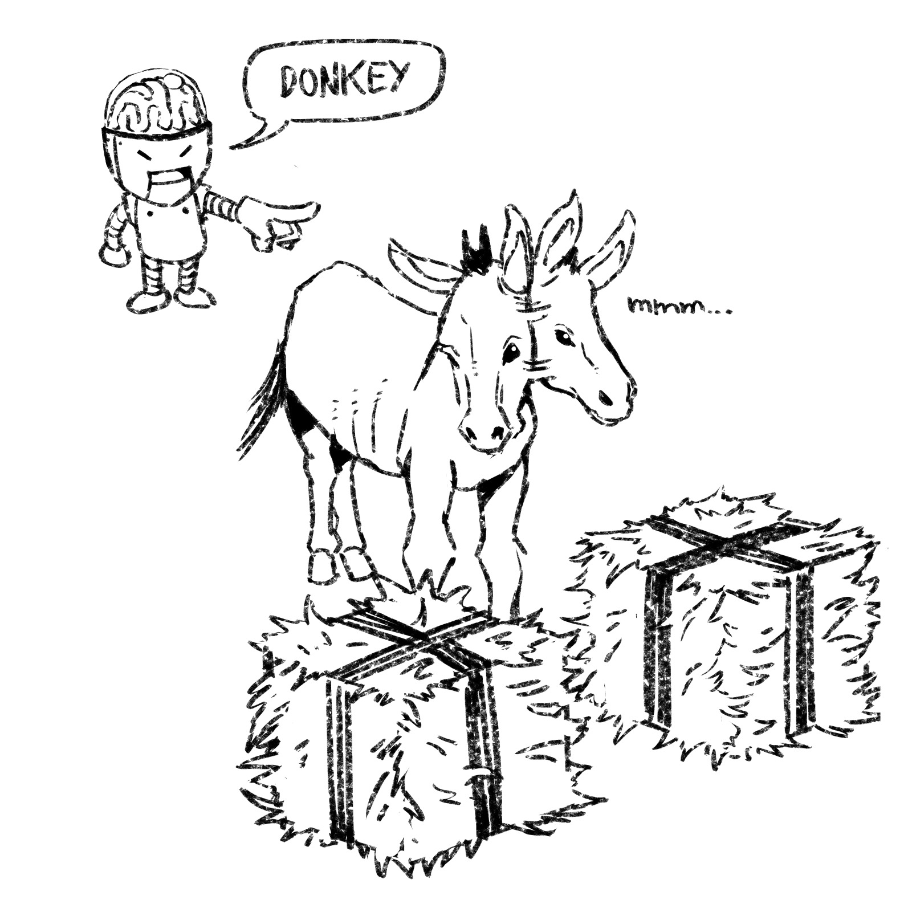
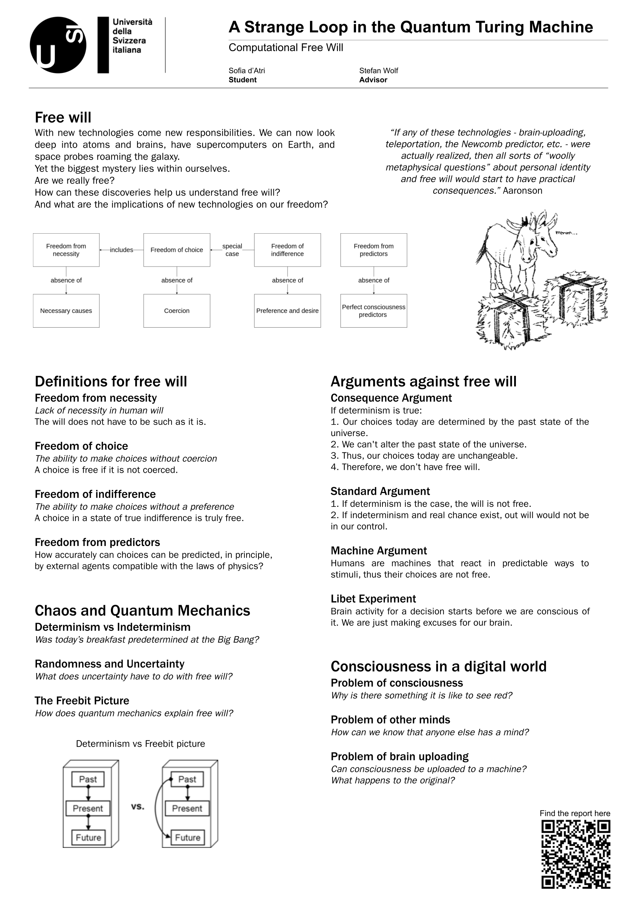
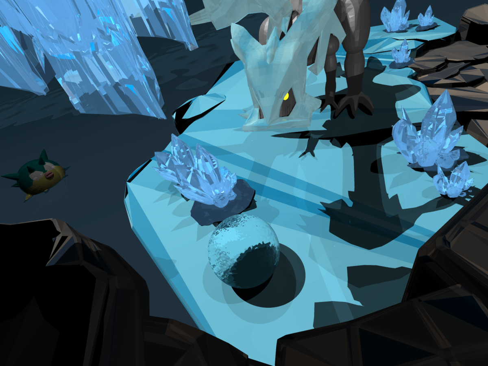
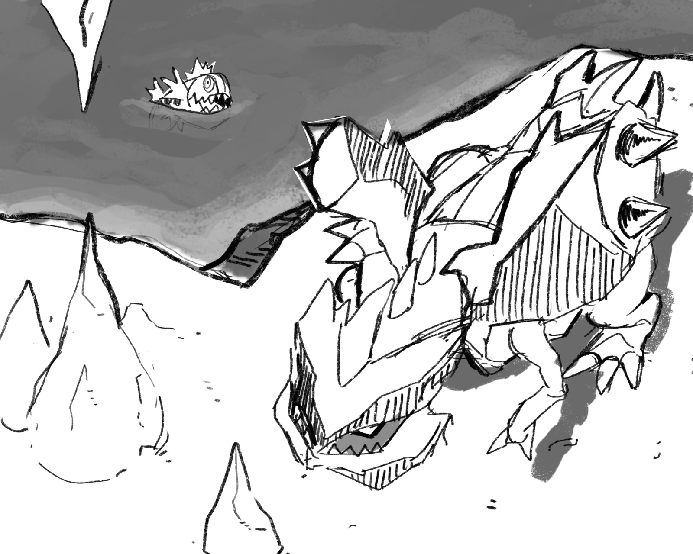
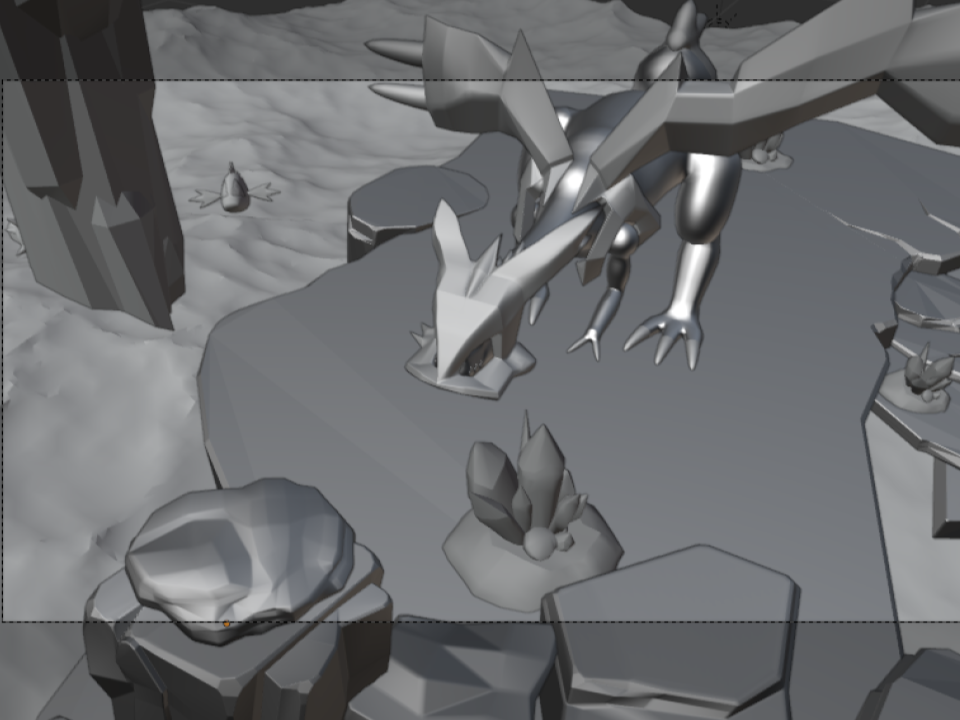
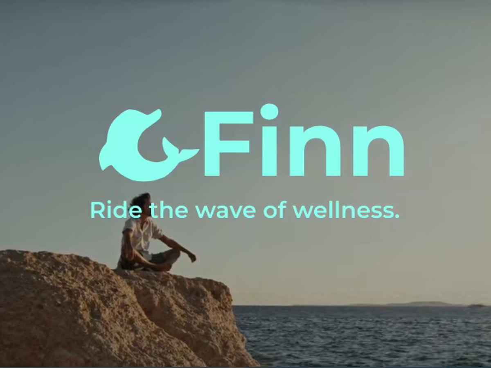
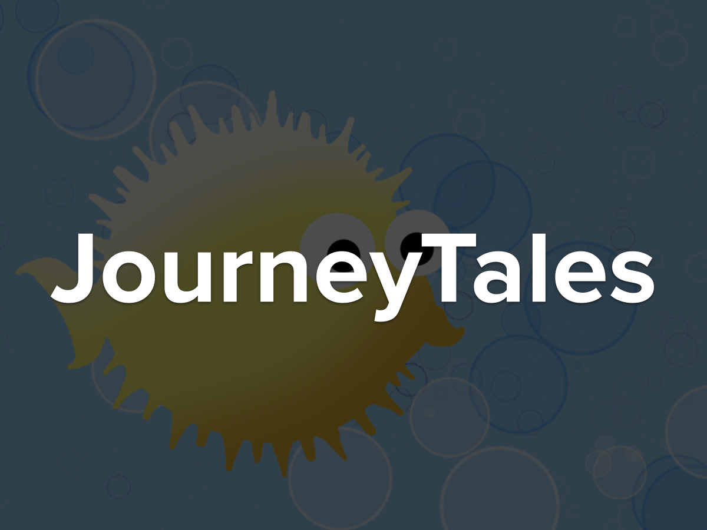
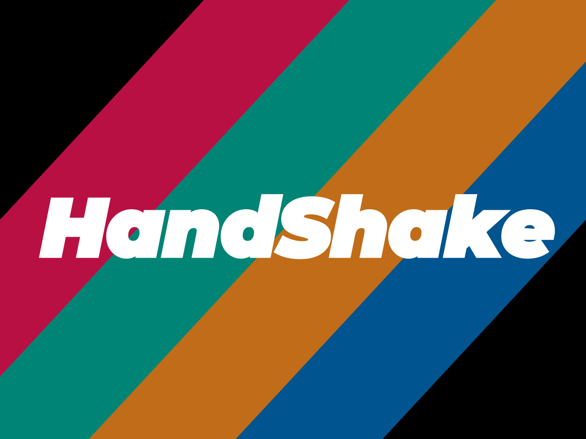

Want to see more?
Click any of the buttons below to see other projects.
Click any of the buttons below to see other projects.

Project for GameLab 2026 at ETH Zurich.
Find the repo here.
Download the game on itch.io.
A hostile alien planet is on a collision course with Earth, and the last hope is to destroy its core before the catastrophe occurs! With the power of magnets on your side, you are the chosen one for this task. Defeat enemies and bosses to make your way to the planet's core, where you will need to make the tough decision.
Polar Collapse is programmed in C# using the MonoGame framework.
This year marked the 20th anniversary of the GameLab course at ETH. To celebrate, every team was randomly assigned a theme from the past editions. Our team got the theme of "Attracion". We brainstormed for a bit and that's how Polar Collapse was born!
Unfortunately, we didn't win the competition at the end of the semester. However, everyone who tried our game told us they had lots of fun (and that they regret not voting for us at the contest!), so that's enough of a win for me hehe
Here's the link to the award ceremony livestream!

Project for Mixed Reality 2025 at ETH Zurich.
Find the repo here.
Our group of 4 people was tasked with building a VR experience around a fully animated and textured human avatar placed in an immersive virtual environment. This involved integrating a parametric avatar with motion sequences, giving it a realistic appearance through textures, shading, and lighting, and letting users interact with it via VR controllers. We used SMPL-X as the underlying body model, TADA for texture and shading generation, and the AIST++ dataset for the dance motions.
We built Dance Dance VRevolution, a VR rhythm game inspired by the classic Dance Dance Revolution, as a fun and interactive way to contextualise our avatar implementation. Players time inputs to falling notes using controller to hit virtual drums, adding a natural VR interaction layer. In the background, our avatar dances along to the music, bringing the technical work to life in an entertaining way.
A dedicated Sandbox mode also lets users interact directly with the avatar, triggering and controlling its animations in real time.
Hardware: Meta Quest 3
Software: Python, Unity, Meta SDK, OpenXR
Technologies: SMPL-X, AIST++, TADA
[1] Relightable Gaussian Codec Avatars, Saito et al., CVPR 2024
[2] Expressive Body Capture:3D Hands, Face, and Body from a Single Image (SMPL-X)

My bachelor project on free will.
Find the thesis here.
On Friday, 28 June, 2024 I succesfully defended my Bachelor's thesis on free will with a grade of 10 out of 10!
I don't claim to solve the free will debate (that's not for me to do!), but it was super interesting to see it from a computational perspective.
My friend Riccardo Piras made the donkey (Buridan's ass) image that is featured on my poster.


Raytracer in C++ for the Computer Graphics course that won the 2023 USI Rendering Competition. I won first place
Find the repo here.
Features include Perlin noise textures, image texturing, optimization, custom obj loader.
Sketch made by Riccardo Piras.

Here's a sketch I made in Blender.


Project for the 2023 Junction Hackathon in Helsinki, Finland.
Repo currently unavailable.
Fun fact: we named it Finn becuase morphine, dolphin, Finn... lol

Travel social media in Java Spring Boot and Vue for the course Software Atelier 4 - Software Engineering Project.
Find the repo here.

Instant messaging webapp in Javascript and Vue for the course Software Atelier 3 - The Web.
Find the repo here.
The first video is the official presentation video we have shown at the end of the project. I made the other videos for fun with random stock footage and songs I liked, to try and create some identity for the app.
But I have no idea how marketing works lol